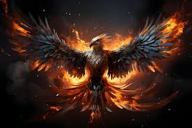
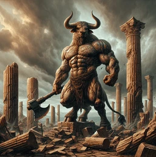
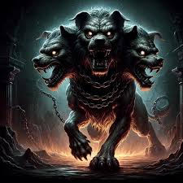

Dragón: Los dragones son seres legendarios que aparecen en mitologías de todo el mundo. Se les representa como grandes reptiles alados con poderes de fuego.Dependiendo de la mitología cambia el aspecto y la zona donde habitan, ya que tambien podemos encontrar dragones marinos,terrestres...
Fénix

Fénix: El fénix es un ave mitológica conocida por renacer de sus propias cenizas, simbolizando la renovación y la inmortalidad.
Minotauro

Minotauro: El Minotauro, con cuerpo de hombre y cabeza de toro, es una criatura de la mitología griega. Habita en el laberinto y es símbolo de fuerza y ferocidad.
Cerbero

Cerbero (Kerberos) es un feroz perro de tres cabezas de la mitología griega, encargado de custodiar la entrada al inframundo. Permitía que las almas de los muertos entraran en el Hades pero impedía que entraran los vivos, salvo algunas excepciones.